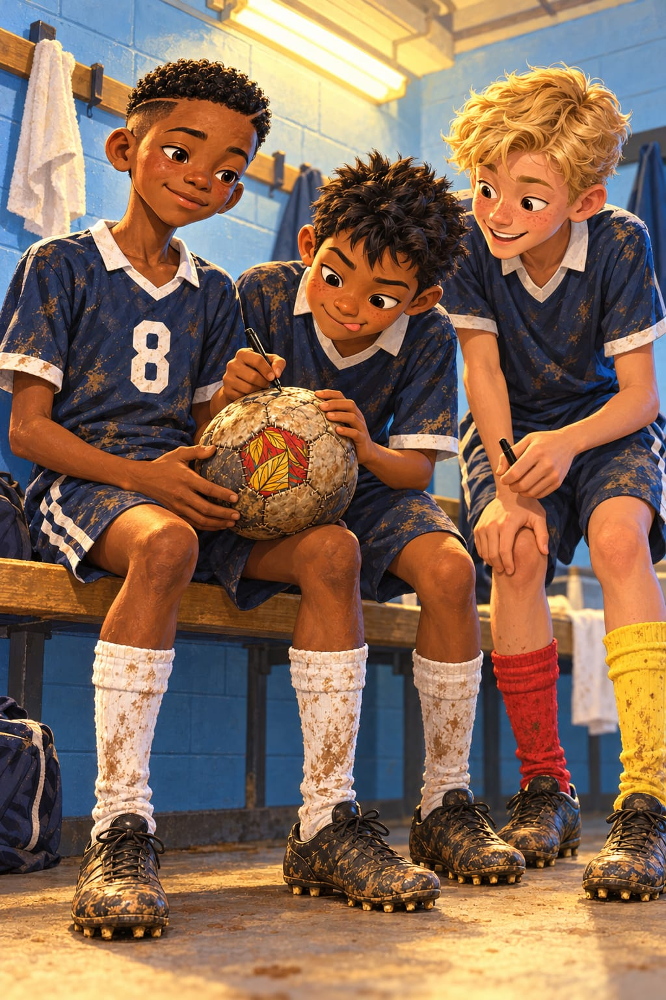
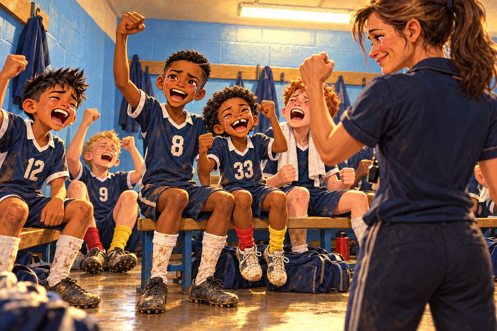
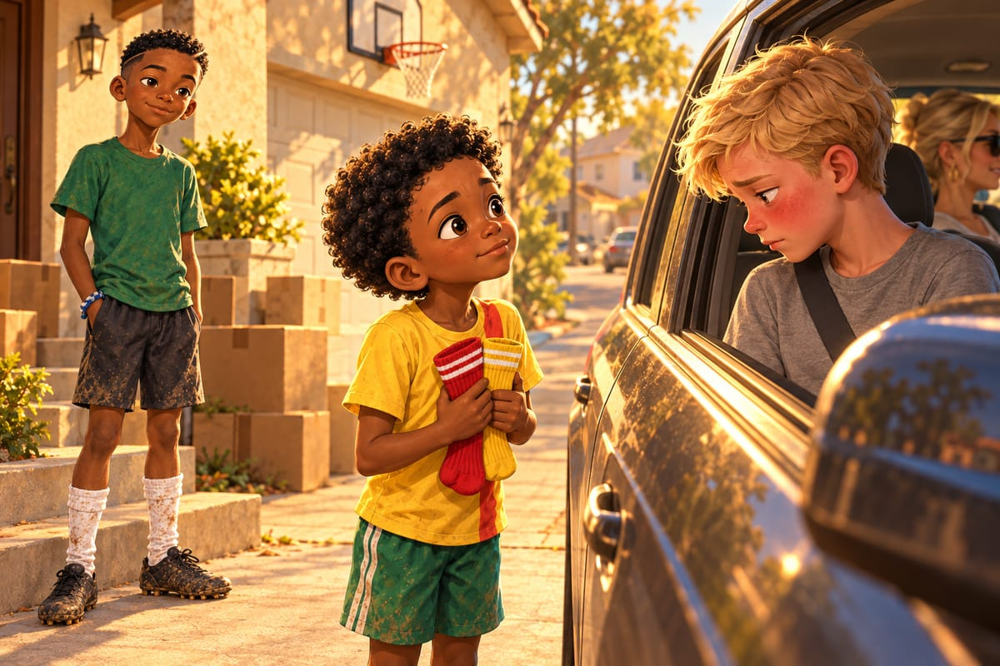

Goodbye, Potomac

« Ils arrivent ! »
Kaydoudou crie ça comme on crie « au feu ». Toute l'équipe de Potomac Valley se retourne.
« Shenandoah Valley Stallions, souffle Diego. Ils viennent de Virginie. Ils n'ont perdu aucun match de l'été, bro. Aucun. »
Et ils sont grands. Pas grands comme des garçons de douze ans : grands comme des grands frères.
« Ils ont mangé leurs parents au petit déjeuner », dit Kaydoudou.
« No way, dit Diego. C'est leurs parents qui les ont mangés. C'est pour ça qu'ils sont si gros. »
Personne ne comprend la blague. Tout le monde rit quand même, parce que tout le monde a peur.
Leur numéro 4 saute pour s'échauffer. Il monte si haut que Tyler siffle entre ses dents.
« Lui, ce n'est pas un joueur, dit Kaydoudou. C'est un escalier. »
« The Stairs ! traduit Diego. Bro, j'adore. »
« I have to mark that guy », gémit Owen, le grand défenseur roux.
« Bonne chance, Owen, dit Kaydoudou. Prends une échelle. »
« Hé, BriBri. Tu fais ta tête de Paris. »
« Je n'ai pas de tête de Paris. »
« Si. Tes sourcils font un toit. »
« C'est notre dernier match ici, Kaydoudou. Dans deux semaines, on est de l'autre côté de l'océan. »
« Je sais. » Kaydoudou arrête de sautiller, juste une seconde. « Alors on gagne. Comme ça, l'Amérique se souviendra de nous. »
On ne part pas comme ça, pense BriBri. On part avec la coupe.
Dix passes avec le ballon de Mami, sans toucher l'herbe, comme toujours. Puis le ballon retourne au fond du sac.
« Work hard ! crie Coach Whitfield. Be brave ! Have fun ! »
Coup de sifflet. Et BriBri joue le plus beau match de sa vie.
Il voit les trois lignes des Stallions, comme Marcus les lui a montrées. Une fois, il passe en arrière, vers Owen.
« Bri ! crie Tyler. Why back ? »
« Attends ! »
Les Stallions montent tous du même côté, comme des chèvres vers le seau. Alors BriBri change de côté d'un coup, et il traverse.
« Yes, Bri ! crie Coach Whitfield. Break the line ! »
« Bri is cooking ! hurle Diego. Il cuisine les Stallions ! Sauce piment ! »
« Arrête de parler et cours ! » rigole Tyler.
À la 31e minute, deux maillots foncent sur BriBri. Et le temps ralentit.
Le ballon roule vers lui, une tache blanche sur l'herbe jaune. Dans la tribune, une voix de grand-mère crie :
« ¡Vamos, mijos ! »
Derrière les milieux des Stallions, Kaydoudou sautille sur la pointe des pieds. Seul.
BriBri lève deux doigts. Kaydoudou part.
Bam ! La passe file au ras du sol et traverse deux lignes d'un coup.
Kaydoudou pose la semelle sur le ballon, et il attend. Deux Stallions se jettent sur lui, comme des mouches sur un beignet.
« MAGNET ! » crie Marcus sur le banc, sa tablette levée au-dessus de la tête.
L'aimant, le coup spécial de Kaydoudou ! Juste avant le choc, il glisse le ballon à Diego, tout seul, qui frappe du gauche au premier poteau. Chhh ! fait le filet.
« What a pass, Bri ! » crie Tyler.
« GOOOAL ! hurle Diego. ABUELA, C'EST POUR TOI ! »
Il court jusqu'à la petite tribune. Abuela Rosa embrasse son chapelet en pleurant de joie.
Mais les Stallions ne paniquent jamais. Juste après la mi-temps, un long ballon, un rebond bizarre, et le haut-parleur grésille :
« Goal for Shenandoah Valley ! One, one ! »
« Water break ! » crie l'arbitre, pour la deuxième fois. Il fait trop chaud. Puis vient la prolongation, et les jambes de Potomac Valley deviennent des sacs de sable mouillé.
« Work rate ! hurle Coach Whitfield. Work rate ! »
« Mes jambes ne parlent plus anglais », gémit Kaydoudou.
« Les miennes ne parlent plus du tout », souffle Diego.
« Encore cinq minutes, dit BriBri. Juste cinq. »
58e minute. Coup franc pour les Stallions, très loin sur la gauche.
« Quelqu'un sur l'Escalier ! » crie BriBri.
« I got him ! » répond Owen.
Mais Owen est rouge comme une tomate.
Le ballon monte, haut dans le ciel blanc d'août. BriBri le voit venir de très loin. C'est ça, le plus dur : il le voit venir, et ses jambes ne bougent plus.
L'Escalier s'élève. Une marche. Deux marches. Trois.
Bam. Son front frappe le cuir. Le ballon rebondit devant le gardien de Potomac Valley et se glisse au ras du poteau.
2‑1.
« Non, souffle Kaydoudou. Non, non, non. »
Deux minutes plus tard, l'arbitre siffle la fin.
« Heads up, guys, dit Coach Whitfield d'une voix cassée. Heads up. »
Dans le vestiaire aux murs bleu clair, sous les néons jaunes, tout le monde pleure. Tyler est assis par terre, ses chaussettes rouge et jaune encore aux pieds.
« My fault, dit-il. I should have helped Owen. »
« No, my fault », dit Owen, la tête dans sa serviette.
« We were better, bro, dit Diego, qui pleure en parlant, parce qu'il fait tout en parlant. On était meilleurs. Même le soleil l'a vu. »
« C'était le dernier, BriBri, sanglote Kaydoudou sur son épaule. Le der-nier. »
BriBri ne pleure pas encore. Il a une boule dans la gorge, grosse comme un ballon.
La porte s'ouvre. Marcus Bell s'assoit au milieu d'eux et tourne sa tablette vers l'équipe.
« Look. »
Personne ne veut regarder. Marcus attend. Une tête se lève, puis une autre.
« Possession : forty-eight percent. Less than them. »
« Quarante-huit ? répète BriBri. Mais en avril, contre les Hawks, on avait soixante-dix. Et on a perdu. »
« Exactly. Now look at this. Lines broken : thirty-four. Them : nineteen. Touches in the box : twenty-two. Them : nine. Big chances : six. Them : two. »
« Trente-quatre lignes traversées, contre dix-neuf, traduit Diego en reniflant. Vingt-deux ballons dans leur surface, contre neuf. Six grosses occasions, contre deux. »
« You lost the match, dit Marcus. You did not lose your game. »
« Vous avez perdu le match, murmure Diego. Vous n'avez pas perdu votre jeu. »
En avril, le ballon n'allait nulle part, pense BriBri. Aujourd'hui, il a voyagé. C'est une défaite, mais pas la même. Elle fait moins mal.
Alors la boule sort d'un coup, et BriBri pleure enfin.
Coach Whitfield entre la dernière, les yeux rouges, elle aussi.
« Guys. I want to say something to Bri and Kaydoudou. »
Même les néons arrêtent de grésiller.
« In February, I saw a little guy with crazy socks. He dribbled everybody. He passed to nobody. »
Kaydoudou renifle très fort.
« And I saw a big guy, so scared to lose the ball that he never did anything with it. »
BriBri baisse les yeux.
« And now, look at you. Kaydoudou, you are the best decoy I ever coached. » Elle s'accroupit devant BriBri. « And Bri… you taught this team to ask the right question. Every pass. Where are we going ? »
Elle se relève.
« Paris is lucky. Don't forget us. And don't you dare forget work rate ! »
« WORK RATE ! » hurle toute l'équipe à travers les larmes, si fort que Kaydoudou éclate de rire en pleurant.

« Decoy, c'est quoi ? » chuchote-t-il en s'essuyant le nez.
Cette fois, BriBri n'a pas besoin de Diego.
« Le leurre. Celui qui court pour tromper la défense. C'est toi. »
« Et toi, tu es quoi ? »
« Moi, je suis la question. »
Assis sur le banc de bois, les yeux encore rouges, BriBri pose le ballon de Mami sur ses genoux. Il n'a pas besoin d'expliquer.
Diego se penche le premier, ses cheveux noirs dressés sur la tête. Il écrit au feutre noir, près du carré de pagne, en tirant la langue : « DIEGO R. #12. Bro for life. » À côté de lui, Tyler attend son tour, le feutre déjà débouché.
Diego ajoute une petite phrase en espagnol, tout en bas.
« Ça veut dire quoi ? » demande Kaydoudou.
« Secret, bro. »
Plus tard, Mrs. Patterson la leur lira : « Le cœur n'a pas de frontières. »
Tyler réfléchit longtemps, comme s'il écrivait une lettre à un roi. Puis il écrit : « TYLER B. #9. Nice socks. »
« Nice socks ? s'indigne Kaydoudou. C'est tout ? »
« It's a compliment, man ! »
Tyler tend le ballon à Kaydoudou sans le regarder. Kaydoudou le serre si fort qu'il manque de le dégonfler.
« Me too ? » demande Owen.
« Of course », dit BriBri.
Owen signe. Coach Whitfield écrit « Work rate ! » avec un cœur. Marcus, en dernier, ne met pas son nom. Il dessine une petite flèche qui traverse trois traits, et dessous, un seul mot : « Why ? »
« Pourquoi quoi ? » demande Kaydoudou.
« Always why, dit Marcus en souriant. Toujours pourquoi. »
Le dernier jour, Diego arrive à pied, son vélo à la main, et s'assoit sur les marches au milieu des cartons.
« For you, bro. »
C'est un bracelet tressé, en fils bleus et blancs, les couleurs du Salvador.
« Abuela made it. She says you're a good boy… for a guy who likes fractions. »
Comme le bracelet de Kaydoudou pour Ousmane, pense BriBri. Le njangi recommence. On donne, et on ne perd rien.
Il glisse le bracelet à son poignet gauche. Il ne trouve pas les mots, alors il tend le poing. Diego le cogne. Main sur le cœur. Diego, après une seconde, fait pareil.
« Brothers ? » demande Diego.
« Brothers. »
« Diego ! crie Kaydoudou depuis la porte. Tu viens nous voir à Paris ? »
« Sure, bro ! With Abuela ! »
Un quart d'heure plus tard, Tyler arrive dans la voiture de sa mère. Il tend un sachet par la vitre, en regardant ailleurs.
« It's stupid. Whatever. »
Dedans, il y a une paire de chaussettes de football toutes neuves. Une rouge. Une jaune.
Kaydoudou reste sans voix. C'est la première fois que BriBri voit ça depuis sa naissance.
« So you don't run out, marmonne Tyler. In France. »
« Tyler. » Kaydoudou s'approche de la vitre. « You are my friend. You know that ? »

Tyler devient rouge jusqu'au front, et la voiture repart. Au bout de la rue, une main sort par la fenêtre. Kaydoudou agite les bras jusqu'à ce qu'elle disparaisse.
« Il a dit que c'était stupide, dit-il tout bas. Mais il avait les yeux mouillés. Tu as vu ? »
« J'ai vu. »
Le dernier soir, la maison vide résonne. BriBri remonte du sous-sol. Dans l'allée, Kaydoudou tire au panier avec un ballon de foot. Il rate tout, et il rit.
« Tu disais au revoir à la chaudière ? »
« Au plafond. Il y a encore la trace du ballon de Mami. »
« La huitième passe, en janvier. Bam. » Kaydoudou rate encore le panier. « C'était ta passe. »
« Non. La tienne. »
« Tu crois qu'il y a des paniers de basket, à Paris ? »
« Je crois qu'il y a de tout, à Paris. »
« Même des Stallions ? »
« Surtout des Stallions. »
Sur son perron, Mr. Hayes lève la main sans rien dire. Biscuit remue la queue.
L'avion part de nuit, de Washington. Au décollage, quand le sol tombe d'un coup, Kaydoudou se penche vers son frère.
« Tu as peur ? »
« Un peu. »
« Gros comment ? »
Elle est petite, cette fois, la vieille peur de Douala.
« Comme un caillou. Un caillou qu'on peut garder dans sa poche. »
Il ne murmure même pas « deux cents tonnes ». Kaydoudou, qui a mis ses chaussettes neuves, lui prend la main quand même.
« Juste au cas où », chuchote-t-il.
À Paris, le matin est gris et doux. Sur un banc de l'aéroport, BriBri ouvre le carnet de Tonton Fokou. Kaydoudou lit par-dessus son épaule.
« La boue ! La passe polie et la passe utile ! La neige ! Le futsal ! Les petits bâtons du banc ! » Il tourne une page. « 2030 ou 2034. Et c'est nous. » Il sourit. « Ça, c'est mon écriture. »
« Je sais. »
« Tu écris quoi, maintenant ? »
« Le titre de l'Amérique. »
Avec son crayon le plus noir, en lettres capitales, il écrit :
« LA RAISON »
« Pourquoi la raison ? »
« Parce que là-bas, chaque passe devait avoir une raison. »
Kaydoudou réfléchit. « Et les chaussettes de Tyler, c'est quelle raison ? »
« L'amitié. »
« Ça, c'est une bonne raison. »
« Les garçons ! appelle Papa. Les valises ! »
BriBri tourne la page. La suivante est toute blanche. Autour d'eux, tout le monde parle français.
BriBri serre le carnet contre lui. Il lève les yeux vers ce nouveau pays qui parle sa langue.
Ici, pense-t-il, ça va être facile.
Il se trompe.